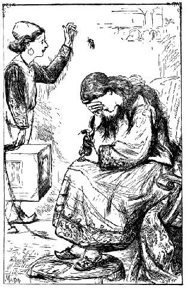
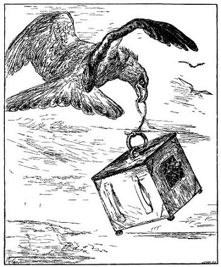
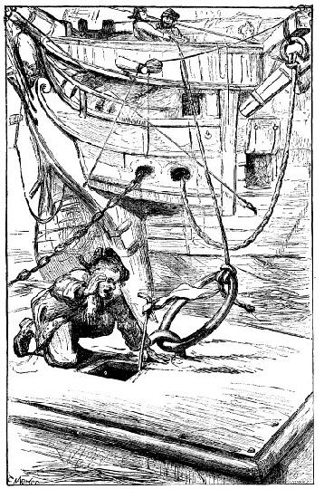
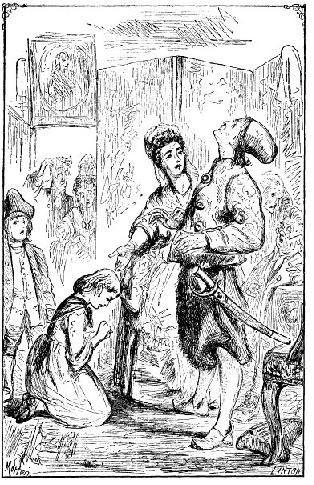

Tác giả theo vua và hoàng hậu đi chơi biển - Những chi tiết về việc tác giả dời bỏ xứ này - Trở về nước Anh.
Tôi vẫn có linh cảm một ngày kia tôi sẽ được trở lại tự do, tuy tôi không thể biết bằng cách nào, mà cũng không thể vạch ra một kế hoạch bỏ trốn mang lại hiệu quả. Con tàu đưa tôi đến đây là con tàu đầu tiên cập bờ biển xứ này. Vua ban xuống những lệnh nghiêm ngặt bắt mọi người, nếu thấy xuất hiện chiếc tàu thứ hai thì phải kéo lên cạn và dùng xe bò đưa cả tàu lẫn toàn bộ thủy thủ và hành khách về Lorbrulgrud. Vua rất mong tìm được cho tôi một người vợ cùng tầm thước với tôi để truyền giống, nhưng thà chết còn hơn, chứ tôi không chịu để lại một hậu thế bị nhốt trong hộp như chim bạch yến trong lồng, hoặc để người ta đem bán khắp nơi cho những nhà quý tộc làm của lạ. Nói thật, tôi được đối đãi hết sức tử tế, tôi được một ông vua và một bà hoàng hậu yêu mến, cả triều đình chiều chuộng, nhưng chẳng xứng đáng với phẩm cách của loài người tí nào. Tôi không thể quên vợ con tôi ở nhà. Vả lại, tôi muốn sống ở một nơi tôi được bình đẳng với mọi người, nơi tôi có thể được đi chơi phố hay về nông thôn mà không sợ bị giẫm chết như một con nhái hay con chó con. Tôi đã được thấy tự do sớm hơn tôi mong mỏi - một sự việc rất lạ lùng. Để tôi kể các bạn nghe thật chính xác, với những chi tiết đầy đủ.
Tôi ở xứ này đã được hai năm, năm thứ ba bắt đầu Cô Glumdalclitch với tôi tham gia đoàn tùy tùng đi theo nhà vua và hoàng hậu trong một cuộc hành trình về bờ biển phía nam. Như thường lệ tôi ở trong một cái hộp du lịch rất đầy đủ tiện nghi, mỗi bề mười hai foot. Chiều theo ý tôi, người ta mắc cho tôi cái võng bằng bốn sợi dây lụa mắc lên bốn góc phòng cho đỡ lắc trong khi một gia nhân đèo tôi đi ngựa. Trên mái nhà, phía trên cái võng, bác thợ mộc đục cho tôi một cái lỗ vuông mỗi bề một foot cho thoáng gió khi trời oi bức. Tôi có thể mở hay đóng cái lỗ ấy bằng một tấm ván.

Đến gần bờ biển, vua dừng lại nghỉ trong một biệt thự gần Flanflasnic, đây là một thành phố cách biển mười tám dặm Anh. Cô Glumdalclitch và tôi rất mệt, tôi bị cảm còn cô Glumdalclitch thì ốm quá không dậy được. Tôi khao khát được xem biển vì đây là con đường thoát duy nhất của tôi. Tôi vờ ốm nặng nên được phép đi cùng anh gia nhân ra biển thở không khí trong lành. Anh ta vẫn thường được giao chăm nom tôi và là người mà tôi rất mến. Tôi không bao giờ quên vẻ mặt không bằng lòng của cô Glumdalclitch lúc cho phép tôi đi biển và những lời cô dặn dò anh gia nhân. Cô vừa nói vừa khóc như linh cảm việc gì sẽ xảy ra. Cậu người hầu mang tôi trong cái hộp ra những mỏm đá nơi bờ biển, cách dinh thự nửa tiếng đồng hồ đi bộ. Tôi bảo cậu đặt tôi xuống đất, tôi mở cửa sổ, bâng khuâng nhìn biển cả. Tôi thấy mỏi mệt và bảo cậu bé tôi muốn nằm võng ngủ một giấc. Tôi lên võng nằm và cậu ta đóng cửa sổ lại cho tôi đỡ lạnh. Một lúc sau tôi ngủ thiếp đi, và đây là những việc đã xảy ra, theo trí tưởng tượng của tôi. Trong lúc tôi ngủ, cậu bé đoán chừng không có nguy hiểm gì, liền bỏ đi kiếm trứng chim trong khe đá. Lúc trước, qua cửa sổ, tôi thấy cậu ta nhặt vài quả trong một hốc đá. Mặc dù việc xảy ra thế nào tôi cũng không biết rõ, chỉ biết bỗng tôi thấy bị lắc rất mạnh một cái, tôi bừng tỉnh dậy, tôi cảm thấy cái hộp đang bị nhấc bổng lên, bay rất cao lên trời với một tốc độ ghê gớm. Cái lắc đầu tiên có thể hất tôi ngã xuống sàn nhà, nhưng sau đó êm dần. Tôi lấy hết sức bình sinh gọi thét lên nhưng vô hiệu. Nhìn qua cửa sổ chỉ thấy trời và mây. Trên đầu tôi, tôi nghe thấy tiếng sột soạt giống như tiếng cánh chim đập. Lúc ấy tôi mới hiểu cái hoàn cảnh bi đát của tôi, tôi nghĩ chắc hẳn một con chim ưng lấy mỏ cắp lấy cái vòng trên nắp hộp, với ý định để hộp rơi xuống đá cho vỡ, như thể nó vẫn ăn thịt rùa theo cách ấy, nó sẽ lôi tôi ra để ngấu nghiến. Chim ưng vốn mắt rất tinh và mũi rất thính, nên từ xa nó đã phát hiện ra mồi, dù mồi có giấu kín hơn tôi dưới những tấm ván dày hai inch.

Tôi thấy tiếng cánh đập rít lên ngày càng nhanh. Chiếc hộp đảo lộn, bay phần phật như lá cờ lệnh gặp một ngày lộng gió. Tôi nghe thấy mấy tiếng mổ rõ mạnh vào con chim ưng (bởi vì một loài chim khác không thể cắp cái hộp của tôi như thế được). Thế rồi hụt một cái, tôi thấy tôi đang rơi thẳng từ trên trời xuống, đến mấy phút, với tốc độ kinh khủng làm tôi suýt tắc thở. Bỗng cái hộp dừng lại, chung quanh tôi, nước bắn tung tóe ầm ĩ như tiếng thác đổ - mạnh hơn cả tiếng thác
Lúc ấy, tôi ước ao cô Glumdalclitch thân yêu ở bên cạnh, tôi mới xa cô chưa đầy một tiếng đồng hồ mà nên nỗi này! Tôi có thể thật thà nói rằng trong lúc gian nguy ấy tôi không thể không thương hại cô bé, tôi nghĩ đến nỗi lo buồn của cô, đến sự bực mình của hoàng hậu, có lẽ cô sẽ bị ghét bỏ. Tôi tin chắc rất ít khách du lịch gặp hoàn cảnh thê thảm như tôi hiện nay. Từng giây, từng phút tôi chờ đợi trong lo âu về cái hộp sẽ bị vỡ tan ra từng mảnh, hay ít nhất cũng bị cơn gió mạnh lật úp hoặc một đợt sóng nhấn chìm, và chỉ một khung kính vỡ là đủ làm tôi chết thẳng cẳng. Cũng may, để đề phòng mọi tai nạn trong các cuộc hành trình, người ta đã đóng bên ngoài cửa kính những tấm lưới sắt. Tôi thấy nước rỉ vào qua nhiều khe hở, tôi ra sức bít lại tất cả. Tôi không đủ sức nhấc cái mái hộp lên để leo lên ngồi trên nóc và kéo dài sự sống thêm mấy giờ hơn là ngồi tù trong hầm tàu như thế này (thôi thì cứ tạm gọi như vậy). Giả thử tôi có thoát được những cơn nguy hiểm này một, hai ngày, thử hỏi tôi còn hy vọng gì ngoài chết đói và chết khát? Suốt bốn tiếng đồng hồ tôi sống trong tình trạng ấy chờ chết, hay nói đúng hơn, mong chết ngay đi cho rồi.
Tôi đã kể với các bạn, ở một mặt hộp không có của sổ, chỉ có hai cái tai chắc chắn để gia nhân khi mang tôi xâu vào thắt lưng da buộc quanh mình. Giữa lúc tôi không còn hy vọng gì nữa, bỗng tôi nghe thấy - hay ít nhất, tưỏng nghe thấy có tiếng cào cào bên ngoài hộp, chỗ hai tai sắt. Một lúc sau, hình như cái hộp bị kéo hay bị móc đi, bởi vì thỉnh thoảng sóng lại dâng lên, che lấp cửa sổ làm cho buồng tối om. Tôi hy vọng đôi chút, tuy tôi không thể tưởng tượng tôi sẽ được cứu sống bằng cách nào. Tôi đánh liều tháo đinh vít đóng ghế liền vào sàn, và tìm cách đóng ghế vào bên dưới tấm ván trần tôi vừa mở lúc nãy. Rồi tôi trèo lên ghế, vươn cổ lên, lấy hết sức kêu cứu bằng mọi thứ tiếng mà tôi biết, sau đó tôi buộc mùi soa vào một cái gậy không lúc nào tôi dời, chọc qua lỗ hổng, vẫy vẫy, để nếu có tàu nào qua gần đấy, thủy thủ biết có kẻ không may bị nhốt trong hộp.

Tôi làm như vậy chẳng có hiệu quả gì, nhưng tôi biết chắc chắn rằng, cái hộp của tôi đang bị kéo đi. Được một giờ hay hơn thế, hộp vấp phải cái gì về phía có hai tai sắt. Tôi sợ đó là một hòn đá, rồi tôi bị lắc mạnh hơn bao giờ hết. Tôi nghe rất rõ một tiếng động trên mái nhà, tôi nghĩ có lẽ một sợi dây cáp đang được xâu vào một cái vòng trên nóc. Tôi cảm thấy đang được nhấc cao lên dần, có lẽ đến ba foot. Tôi lại vẫy vẫy cái mùi soa buộc ở đầu gậy và thét tướng lên đến khản cả giọng. Tôi nghe một tiếng đáp, nhắc lại ba lần, khiến tôi sung sướng quá, không bút nào tả xiết. Bây giờ, tôi nghe thấy tiếng chân nện trên đầu, và có ai đó ghé vào lỗ hổng kêu lên bằng tiếng Anh: "Ai ở dưới ấy, nói đi!". Tôi trả lời, tôi là người Anh, bị số phận đen đủi đầy ải vào cảnh khổ nhục chưa từng ai ở trần gian này phải chịu, và tôi van nài, các ngài vì Chúa hãy cứu tôi thoát khỏi cái nhà tù này. Tiếng nói đáp lại rằng tôi đã được cứu sống, bởi vì cái hộp đã kéo vào đến tàu. Anh thợ mộc đến cưa một cái lỗ để tôi ra. Tôi bảo không cần làm như vậy mà chỉ cần ai đó cứ việc móc vào cái vòng trên nóc hộp và đưa vào buồng thuyền trưởng. Thấy tôi nói vậy, có người tưởng tôi điên những người khác phá lên cười. Sự thật, tôi chưa biết là mình đang sống giữa những người tầm vóc như tôi, sức khỏe như tôi. Anh thợ mộc đến và chỉ mấy phút, anh đã cưa được một cái lỗ mỗi bề chừng bốn foot anh đưa xuống một cái thang nhỏ. tôi leo lên và được đưa lên tàu, sức khỏe sút hẳn đi.
Thủy thủ đã hết sức ngạc nhiên, đặt nhiều câu hỏi, nhưng tôi không buồn trả lời. Về phần tôi, tôi ngạc nhiên thấy nhiều người tí hon đến thế, bởi vì, từ lâu nay đã quen nhìn những người khổng lồ, tôi tưởng thủy thủ là những người thuộc nước tí hon. Ông thuyền trưởng Thomas Wilcocks, một người trung thực, có phẩm hạnh, Ở vùng Shropshire, thấy tôi sắp xỉu đi, bèn dắt tôi vào phòng riêng, ông cho tôi uống một liều thuốc bổ, cho đặt tôi lên giường và bảo tôi cần phải nằm nghỉ. Trước khi ngủ, tôi bảo ông rằng ở trong hộp, tôi có nhiều đồ gỗ quý nên giữ lấy một cái võng to, một cái giường đẹp, mấy cái ghế, một cái bàn, một cái tủ, buồng tôi trải thảm, hay đúng hơn, trải một thứ nệm bằng lụa và vải bông. Tôi còn bảo ông nên cho một người mang cái hộp của tôi vào phòng ông để tôi mở cho ông xem các thứ bên trong. Nghe những lời kỳ lạ như thế, ông thuyền trưởng tưởng tôi mê. Tuy nhiên chắc là để tôi yên lòng, ông ta hứa sẽ làm những điều tôi căn dặn ông ra ngoài boong tàu, cho mấy người vào trong cái hộp mang đồ đạc và cái nệm bông ra. Tủ, ghế, giường hỏng cả, bởi vì mấy gã thủy thủ ngu dốt đã không tháo đinh vít ra, lấy sức mạnh mà giật. Họ tháo những tấm ván tốt nhất và chiếm vài ba thứ hay hay, còn lại họ vứt cả xuống biển. Cái hộp lỗ chỗ những lỗ thủng ở dưới đáy và ở khắp bốn mặt nên trôi tuột xuống đáy biển. Nói thật, tôi vui mừng vì không phải chứng kiến cái cảnh tàn phá ấy. Cái đó có thế gợi cho tôi những kỷ niệm mà tôi muốn quên đi.
Tôi ngủ được mấy giờ, một giấc ngủ đầy ác mộng. Tôi mơ thấy xứ sở tôi vừa thoát khỏi, thấy những cơn nguy hiếm tôi vừa trải qua. Nhưng lúc trở dậy, trong người thấy dễ chịu hơn nhiều. Khoảng tám giờ tối, thuyền trưởng bảo dọn cơm cho tôi ăn, ông ta tưởng tôi nhịn đói từ lâu lắm rồi. Ông ta tiếp tôi rất tử tế và nhận thấy tôi không có vẻ gì là mê sảng vì những lời tôi nói rất mạch lạc. Khi chỉ còn lại hai chúng tôi, ông bảo tôi kể cho ông nghe các cuộc du lịch của tôi và sự rủi ro nào đã dẫn tôi đến chỗ lênh đênh trên mặt biển như thế này. Ông nói, khoảng giữa trưa, qua ống nhòm, ông thấy cái hòm và tưởng là một con thuyền, ông cho lái tàu về phía ấy để mua bánh bích quy, vì tàu gần hết bánh. Đến gần mới biết là mình lầm, ông liền thả một chiếc xuồng xuống biển đi dò la. Thủy thủ quay trở lại hoảng hốt báo tin là có một căn nhà trôi dạt trên biển. Ông cười, cho là họ điên rồi đích thân ông xuống xuồng, ra lệnh cho thủy thủ đem theo dây cáp, lúc ấy biển lặng, họ bơi mấy vòng quanh cái hòm thấy có cửa sổ và hai lưới dây thép bên ngoài cửa. Thuyền trưởng trông thấy hai cái tai hòm liền cho buộc dây cáp vào đấy rồi kéo đến tàu. Một dây cáp thứ hai được xâu vào cái vòng trên mái nhà rồi người ta dùng bánh xe nhấc bổng cái hòm lên cao chừng hai, ba foot. Họ thấy mùi soa buộc vào đầu một cái gậy và kết luận rằng chắc một kẻ xấu số nào đó bị nhốt bên trong. Tôi hỏi thuyền trưởng xem ông hoặc một người nào khác, lúc thoạt tiên thấy cái hòm có ai trông thấy con chim khổng lồ ở trên trời không. Ông đáp, trong khi tôi ngủ có đưa vấn đề này ra hỏi mọi người, và một thủy thủ nói có trông thấy ba con chim bay về hướng bắc nhưng là loài chim bình thường thôi, theo tôi nghĩ là vì chim bay rất cao nên từ xa anh ta nhìn thấy nó cũng bình thường như các con chim khác.
Tôi hỏi thuyền trưởng xem chúng tôi đang cách đất liền bao xa. Sau khi tính toán, ước lượng thì ông trả lời tàu của ông đang cách xa đất liền ít nhất cũng một trăm dặm. Tôi bảo ông đã tính sai gần một nửa, bởi vì từ khi tôi dời xứ sở người khổng lồ đến khi tôi rơi xuống biển, chưa đầy hai tiếng đồng hồ. Đến đây ông cho là tôi quẫn trí nên khuyên tôi đi nghỉ ở một buồng riêng dành cho khách. Tôi khăng khăng đáp rằng, nhờ bữa cơm ông vừa thết tôi và việc được hầu chuyện với ông đã làm cho tôi bình phục hoàn toàn, và trí óc tôi sáng suốt hơn bao giờ hết. Ông trở lại nghiêm nghị và hỏi tôi xem lương tâm tôi có bị cắn rứt vì tôi đã phạm vào một trọng tội gì không. Ông nghi tôi bị một ông vua nào đó trừng phạt bằng cách nhốt vào trong hòm rồi đem vứt xuống biển giống như ở một số nước, những kẻ phạm trọng tội bị nhốt vào trong một cái tàu thủng, không lương thực, để trôi giữa biển khơi. Ông hối hận đã vớt lên tàu một thằng đạo tặc như tôi, song ông cam đoan sẽ để tôi lên bến đầu tiên và không làm gì tôi cả. Ông nói thêm, những điều ông nghi ngờ đã được xác minh bằng những câu chuyện phi lý mà tôi đã nói với thủy thủ rồi nói với ông về cái hộp hay cái hòm, cũng như bằng vẻ mặt lạ lùng, cử chỉ của tôi trong suốt bữa cơm.
Tôi xin ông kiên nhẫn nghe đầu đuôi câu chuyện. Tôi kể rất trung thực những cuộc phiêu lưu từ ngày tôi từ giã nước Anh đến khi tôi được ông vớt lên tàu. Cuối cùng, sự thật đã thắng. Ông vốn là người hiểu biết, trung thực và có phẩm hạnh, không phải là không có học thức, biết phân biệt điều hay lẽ phải, nên ông tin vào lòng ngay thật của tôi và cho câu chuyện tôi kể là đúng sự thật. Để có chứng cớ rõ ràng, tôi đề nghị ông cho người mang cái tủ lên vì tôi còn giữ chìa khóa tủ trong túi. Trước mắt ông, tôi mở tủ ra, cho ông xem các đồ vật kỳ lạ tôi đã thu lượm được ở cái xứ sở mà tôi đã thoát khỏi một cách kỳ diệu ấy: một cái lược làm bằng những sợi râu của vua, mà lưng nó là một mảnh móng tay của hoàng hậu. Có cả một loạt kim và dinh ghim dài một foot, bốn cái vòi ong vò vẽ to bằng cái đinh đóng xà nhà. Lại có cái nhẫn của hoàng hậu tặng tôi, hôm ấy, bà tháo chiếc nhẫn ở tay út ra rồi đeo vào cổ tôi làm cái vòng. Tôi đề nghị thuyền trưởng nhận cho cái nhẫn ấy làm kỷ niệm của một kẻ mang ơn ông, nhưng ông nhất quyết chối từ. Tôi cho ông xem cái chai chân, chính tay tôi đã cắt ở ngón chân một cô tùy tùng của hoàng hậu, nó to đúng bằng quả táo. Nó rắn quá, nên lúc về đến nước Anh, tôi cho gọt thành hình một cái cốc và đặt trên đế bạc. Sau cùng, tôi mời thuyền trưởng xem cái quần đùi tôi đang mặc được cắt bằng da chuột.
Thuyền trưởng chỉ nhận cái răng của một gia nhân và ông xem xét ra vẻ thích thú và lạ lùng lắm. Ông cảm ơn tôi rối rít vì một vật nhỏ mọn không đáng được cám ơn nhiều đến như thế. Chiếc răng này là của anh đầy tớ cô Glumdalclitch được một nha sĩ tồi bẻ nhầm, vì nó không sâu một tí nào. Tôi cho rửa sạch rồi cất vào tủ. Nó dài chừng một foot và dường kính bốn inch.
Nghe tôi kể chuyện xong, thuyền trưởng vui thích hết sức - ông mong mỏi, khi về nước Anh, tôi sẽ viết một quyển sách cho mọi người biết. Tôi đáp, sách kể chuyện du lịch ngày nay thiếu gì, tác giả viết sách cốt để phô trương hay vì quyền lợi riêng tư hơn là để nói sự thật. Vả lại, câu chuyện của tôi chẳng có gì huyền hoặc, tôi cũng chẳng miêu tả những cỏ cây những chim muông kỳ dị, mà tôi cũng không nói đến những phong tục, tập quán của những dân tộc dã man đầy rẫy trong các sách hiện nay. Dù sao tôi cũng cảm ơn ý kiến tốt của thuyền trưởng và hứa sẽ nghĩ về vấn đề này.
Ông rất ngạc nhiên thấy tôi nói to như hét và hỏi tôi nhà vua và hoàng hậu xứ ấy có nghễnh ngãng không. Tôi phải giải thích đó là thói quen từ hai năm nay và về phần tôi, tôi rất yêu thích cách nói của thuyền trưởng và của thủy thủ, nghe êm ái như tiếng thì thầm. Còn ở xứ kia, lúc nói tôi phải hét to như gọi khách qua đường, và người khách như từ trên gác chuông nhìn xuống - trừ khi người ta đặt tôi trên bàn hay trong lòng bàn tay. Tôi cũng nói thật với thuyền trưởng rằng, lúc tôi leo lên tàu, chung quanh là thủy thủ, tôi coi họ như những con vật nhỏ bé đáng khinh nhất trần đời. Bởi vì, trong suốt thời gian ở xứ ấy, không bao giờ tôi soi gương. Tôi quen sống với những người khổng lồ, chắc hẳn bên cạnh họ, tôi sẽ thấy tôi là kẻ chẳng đáng giá đồng xu. Thuyền trưởng bảo, lúc tôi ăn cơm, ông ta thấy tôi nhìn cái gì cũng như lạ lùng và hình như tôi cố nhịn không cười phá lên. Lúc ấy, ông ta không hiểu được dáng điệu, cử chỉ của tôi và nghĩ rằng tôi hơi điên. Tôi đáp rằng, ông ta đã nhận xét đúng, tôi hết sức lạ lùng thấy đĩa ăn chỉ to bằng đồng hai xu, jambon bằng một mẩu bánh con, tách uống nước như quả hạt dẻ, và, cứ thế, tôi miêu tả bát đĩa và thức ăn của ông như nhưng thứ cùng loại mà tôi vẫn nhìn thấy. Mặc dù hoàng hậu thửa cho tôi những đồ dùng hợp với tầm vóc của tôi, nhưng suốt ngày tôi chỉ có trông thấy những đồ dùng to tướng quanh mình nên tôi không buồn nghĩ đến thân hình bé nhỏ của tôi, cũng như người ta không nghĩ đến lỗi lầm của mình. Thuyền trưởng rất thú vị về câu châm biếm của tôi và ông ta vui vẻ bảo, giá như mất một trăm sterling mà được thấy tôi bị treo lơ lửng nơi mỏ chim ưng rồi rơi phăng phăng xuống biển ông cũng vui lòng. Quả là một cảnh tượng xứng đáng được ghi lại cho những thế hệ mai sau. Rồi ông so sánh với bức tranh Phaeton[1] rất giống trường hợp của tôi, tuy tôi không tán thành lắm cái lối châm chọc ấy.
Sau khi cho tàu ghé ở Đông Dương, thuyền trưởng trở về Anh, nhưng tàu bị thổi về hướng đông bắc, vĩ tuyến 44, kinh tuyến 143. Nhưng hai hôm sau, gặp luồng gió tây, chúng tôi đi về hướng nam rồi đi qua đảo Tân Hòa Lan, tiến theo hướng tây nam rồi nam tây nam, cho đến khi vượt qua mũi Hảo Vọng. Cuộc hành trình rất may mắn, nhưng tôi chẳng kể lại những trang nhật ký trên tàu, sợ làm phiền các bạn. Thuyền trưởng đỗ lại ở một vài bến để lấy lương thực và lấy nước ngọt. Nhưng tôi ở lì nên tàu cho đến khi cập bến ở
Dọc đường, thấy nhà cửa, cây cối, súc vật và mọi người, cái gì cũng bé tí ti, tôi tưởng như mình trở lại nước Lilliput. Tôi sợ giẫm nát những người đi đường nên luôn mồm quát họ tránh cho tôi di, thành thử đến vài ba lần suýt bị đánh vì tính lỗ mãng của mình.

Khi tôi về đến nhà (tôi phải hỏi thăm, bởi vì tôi không nhận ra nhà của tôi nữa), một anh dày tớ ra mở cửa. Lúc vào nhà, tôi khom khom lưng đầu đưa ra phía trước chẳng khác gì con ngỗng, vì tôi sợ đụng đầu. Vợ tôi chạy ra ôm hôn tôi. Tôi liền quỳ xuống, thấp quá đầu gối vợ, tôi nghĩ có thế mới vừa tầm cho vợ hôn. Đứa con gái bé quỳ xuống chân tôi để tôi bạn phước lành, nhưng tôi chỉ thấy nó lúc nó đứng thẳng dậy vì tôi, vẫn giữ thói quen luôn luôn nhìn lên trời. Tôi muốn một tay cầm ngang lưng nó để nhấc nó lên. Từ trên cao, tôi nhìn xuống những người làm trong nhà và vài ba người bạn đến thăm tôi, như thể họ là những người tí hon, còn tôi là người khổng lồ. Tôi bảo rằng vợ tôi sống kham khổ quá nên nhỏ hẳn đi, cả con cháu gái bé nữa. Nói ngắn gọn, tôi đã có nhưng cử chỉ lạ lùng như đối với thuyền trưởng, nên cả nhà tưởng tôi loạn óc. Tôi ghi lại những chi tiết này ra để các bạn thấy sức mạnh đáng sợ của tập quán và định kiến.
Chỉ ít lâu sau, tôi với gia đình và bạn bè không hiểu lầm nhau nữa. Vợ tôi bảo từ nay tôi không được đi du lịch đâu hết. Nhưng, khốn nỗi, số phận tôi lại quyết định cách khác, độc giả sẽ biết sau này. Đến đây chấm dứt cuộc du lịch đen đủi thứ hai của tôi.
[1] Nhân vật thần thoại là con của Mặt trời và Clymene. Một hôm được cha cho phép đánh xe mặt trời đi chơi. nhưng vì thiếu kinh nghiệm nên Phaeton suýt đốt cháy vũ trụ. Cha tức giận quật chết Phaeton rồi vứt xác xuống sông Eridanos (ND).